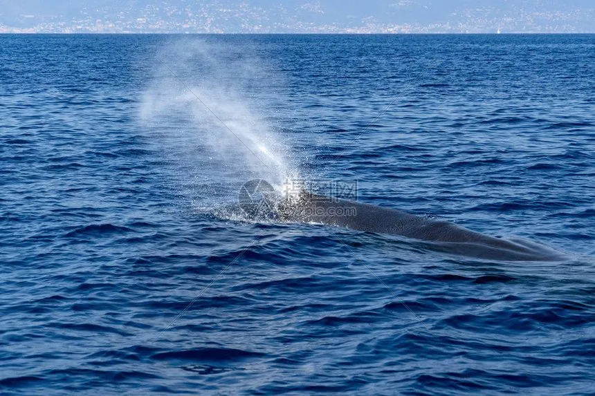

哺乳动物 · 动物界
抹香鲸 Physeter macrocephalus

现存最大的齿鲸，头部长方体状、占体长三分之一，能潜入两千米深海捕食大王乌贼，体内可形成龙涎香。
- 分类
- 门脊索动物门纲哺乳纲目偶蹄目科抹香鲸科属抹香鲸属
- 栖息环境
- 全球各大洋的深水海域，从极地到热带均有分布
- 地理分布
- 全球各大洋，热带与温带深水海域种群较多
- 保护级别
- IUCN 易危（VU）；CITES 附录Ⅰ
物种志
抹香鲸体长 11–18 米，体重 15–50 吨，雄性明显大于雌性，是现存最大的齿鲸。它的头部巨大呈长方体状，约占体长的三分之一，内含鲸脑油器官；身体皮肤多皱褶，呈深灰至黑褐色，下颌窄小，长有一排圆锥形牙齿，背鳍小而圆。
抹香鲸分布于全球各大洋的深水海域，从极地到热带都能见到，常结群活动。它是潜水能力最强的鲸类之一，可下潜到 2000 米以上，一次闭气可达 90 分钟，主要捕食深海的大王乌贼、章鱼和鱼类，潜水时常发出响亮的咔嗒声用于回声定位。抹香鲸的肠道分泌物可形成名贵的龙涎香，历史上曾因此被大量捕杀。雌鲸妊娠期约 14–16 个月，每胎 1 仔。目前全球种群估计有数十万头，被列为易危。
形态与习性
- 食性深海大王乌贼、章鱼与鱼类
- 体长11–18 m，雄性明显大于雌性
- 体重15–50 t
- 寿命约 60–70 年
- 繁殖妊娠期约 14–16 个月，每胎 1 仔
- 潜水可潜至 2000 m 以上，一次闭气可达 90 分钟
- 头部长方体状头部约占体长的三分之一
趣味知识
- 抹香鲸的头部约占体长的三分之一，内含鲸脑油器官。
- 它能潜入 2000 米深海捕食大王乌贼，闭气可达 90 分钟。
- 名贵的龙涎香是抹香鲸肠道分泌物形成的。
- 抹香鲸是现存最大的齿鲸，牙齿只长在下颌。